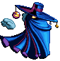

|
retour |
| Une interview exclusive de M. Tan-Long Taing, créateur de jeu chez Ubi Soft, par notre envoyé spécial Yann Boudart : |
| Yann Boudart : Bonjour M. Taing.
Tan-Long Taing : Bonjour.
. |
| Y. B. : Vous êtes concepteur de jeu chez Ubi Soft, et vous avez participé à la création du jeu Rayman Forever, qui sortira le 28 août. Parlez-nous un peu de votre travail. T.-L. T. : Et bien j'ai créé des mondes dans lequel Rayman peut évoluer, entre des prunes flottantes et des gâteaux glissants, en évitant antitoons, chasseurs, pics et autres dangers. En bref je manipule tous les éléments de l'univers de Rayman pour concevoir des niveaux attrayants pour les joueurs. |
 |
Y. B. : Depuis combien de temps travaillez-vous pour Ubi Soft ? T.-L. T. : Je viens de démarrer, même si je joue depuis longtemps afin de me familiariser avec l'univers Rayman |
| Y. B. : C'est donc le premier jeu sur lequel vous travaillez ? T.-L. T. : Oui. Vous savez, pour mon âge, c'est déjà pas mal. Y. B. : Comment cela, quel âge avez-vous ? T.-L. T. : J'aurais 12 ans dans quelques mois. Y. B. : 12 ans ????? ! ! ! ! ! ! ! Ca n'est pas un peu jeune pour travailler dans l'informatique ? T.-L. T. : Mais non, surtout que pour créer des niveaux avec Rayman, il n'y a pas besoin d'être polytechnicien. Ca tombe bien, j'ai pas l'âge (rire). |
| Y. B. : Comment expliquez-vous alors que vos maps aient été sélectionnées pour Rayman For Ever ? T.-L. T. : Le talent… Y. B. : Je vois… |
| T.-L. T. : En fait les outils sont simples à utiliser mais faire une très bonne map à partir de ces outils, c'est un peu comme créer une œuvre d'art, il faut donner de sa personne… Y. B. : Bien, auriez-vous pour finir quelques conseils aux jeunes créateurs…euh…je veux dire aux autres créateurs ? T.-L. T. : Donnez libre cours à votre créativité, et surtout faites-vous plaisir, la création est une joie ! Y. B. : Et bien merci pour votre témoignage, M. Taing, et bonne continuation dans l'univers des jeux vidéos. T.-L. T. : Merci à vous. A bientôt ! |